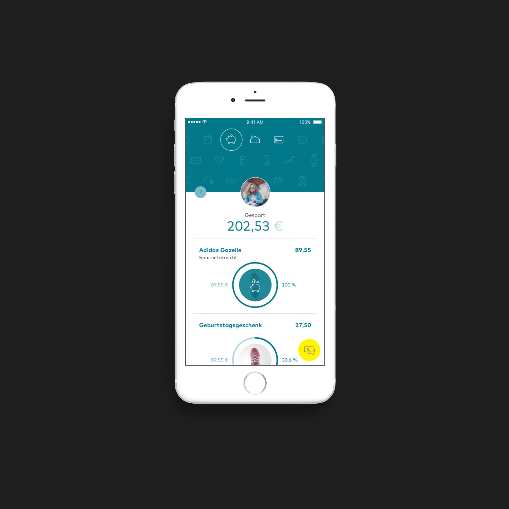

<div class="container">
  <div class="container_inner default_template_holder clearfix">

  <div class="portfolio_single small-images">

<div class="two_columns_66_33 clearfix portfolio_container">
	<div class="column1">
		<div class="column_inner">
			<div class="portfolio_images">
				
				
				
			</div>
		</div>
	</div>
	<div class="column2">
		<div class="column_inner">
			<div class="portfolio_detail portfolio_single_follow clearfix" style="margin-top: 0px;">
				<h3 class="info_section_title">Comdirect</h3>
        <div class="info portfolio_single_content">
          <div class="vc_row wpb_row section vc_row-fluid" style=" padding-top:20px; text-align:left;">
            <div class=" full_section_inner clearfix">
              <div class="vc_col-sm-12 wpb_column vc_column_container">
                <div class="wpb_wrapper">

                  <div class="wpb_text_column wpb_content_element ">
                    <div class="wpb_wrapper">
                      <div class="wpb_wrapper">
                      <p>Comdirect is the direct banking arm of Commerzbank, one of Germnay's largest banks. It is recognised as a leader in internet and telephone banking.</p>
                      <br />
                      <p>
                        As part of its mobile banking strategy, Comdirect is the first major German bank to create a banking service specifically for children and teenagers.
                      </p>
                      <br/>
                      <p>
                        The service, called Mobox, is a mixture of practical banking tools along with active support to encourage financial discipline and awareness for youngsters.
                      </p>
                      <br/>
                      <h6 class="info_section_title">The Project</h6>
                      <p>Comdirect engaged us to lead the mobile development streams for iOS and Android.</p>
                      <br/>
                      <p>
                        Typical for most of our projects, we worked together in a mixed team setup. This meant being embedded within a larger team which included designers, banking system specialists, backend developers and QA experts.
                      </p>
                      <br/>
                      <p>
                        Increasinly common in our projects is supporting a junior development team to take over mobile app development. For Comdirect this was a core goal defined by the bank's technical organisation. To achieve this we employed a recipe that has worked well on previous projects. Namely a managed phasing out of our involvement, going from technical leads to a supporting function as the project progressed.
                      </p>
                      <br/>
                    </div>
                    </div>
                  </div>
                </div>
              </div>
            </div>
          </div>
        </div> <!-- close div.portfolio_content -->
        <div class="info portfolio_single_custom_field">
          <h6 class="info_section_title">Install the App</h6>
          <p><a href="https://itunes.apple.com/de/app/comdirect-mobox/id1133993450?l=en&mt=8"  target="_blank">
                    
                </a></p>
                <p><a href="https://play.google.com/store/apps/details?id=de.comdirect.mobox"  target="_blank">
                    
                </a></p>
        </div> <!-- close div.info.portfolio_single_custom_field -->

      </div>
		</div>
  </div>
</div>
